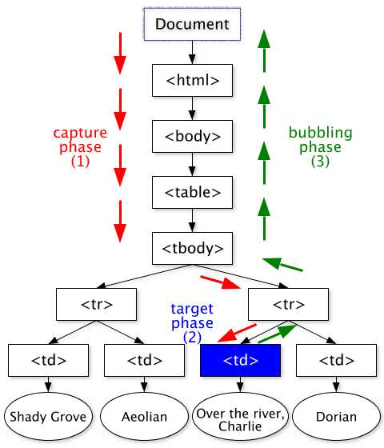

今天要介紹的是Javascripy中的一個基礎但卻很重要的觀念
先放上不錯的介紹資源
Bubbling and capturing
addEventListener
很常用到的addEventListener語法裡面有幾個參數介紹：1
2
3
4
5Event.target.addEventListener(type, function, {
capture: ture/flase,
once:true/false,
passive:true/false
});
- type：各種監聽事件像是click/scroll/mouseenter…。
- listener：事件發生時負責接收事件的物件，通常為函式。
- options：包含三種可選參數：
- capture：ture–>
capture phase。預設為fales–>bubbling phase。 - once：只監聽一次，觸發一次後就結束。
- passive：選擇這個屬性將無法在函式中使用 event.preventDefault() 方法。
- capture：ture–>
冒泡事件 bubbling / capture
要介紹的重點就是冒泡事件

圖片來源
針對我們的範例做簡單介紹
在原始範例中我們可以看到這個DOM結構有三層，由內而外分別是3->2->1
而我們針對這三個div都做一次點擊事件1
2
3
4
5
6<div class="one">
<div class="two">
<div class="three">
</div>
</div>
</div>
1.Bubbling phase
1 | function logText(e) { |
因three是最內層，當我們點擊three時，同時也會點到two和one
而預設的觸發順序是，bubbling(由內到外)
就像是泡泡一樣，所以可以翻作冒泡事件。
這張圖解我覺得更好懂一些
圖片來源
2. Capture phase
反之，如果我們將capture改為true，
觸發順序將變成由外到內依序被觸發，再看一次圖：（紅色路線）
Event.stopPropagation()
在很多時候我們必須阻止這些事件的傳遞（遇過的情境：當點選漢堡icon時，選單要滑出；當點選畫面任何位置時，選單要隱藏。）
我們在這範例中,如果我們對每個對象都加入stopPropagation1
2
3
4
5function logText(e) {
console.log(this.classList.value);
e.stopPropagation(); // stop bubbling!
console.log(this);
}
這時每次點擊只會有當下的目標被觸發，事件就不會再往外或往內傳遞。
(也可以針對某個元素做stopPropagation)
Event.preventDefault()
很多html會有預設的功能存在，像是超連結、表單送出(submit)等
要阻止這些預設功能觸發，可以加上：1
2
3
4target.addEventListener('click', function(e){
e.preventDefault();//阻止預設功能
// do something else
});
補充Target和currentTarget的不同
以這個範例來說1
2
3
4
5function logText(e) {
console.log(e.target);
console.log(e.currentTarget);
}
document.querySelector('.one').addEventListener('click',logText)
當我事件設定在最外層的one時，我點擊在one裡面的three(一樣會觸發one)但是此時
e.target = three
e.currentTarget = one
簡單來說:
currentTarget始终是监听事件者，而target是事件的真正发出者。